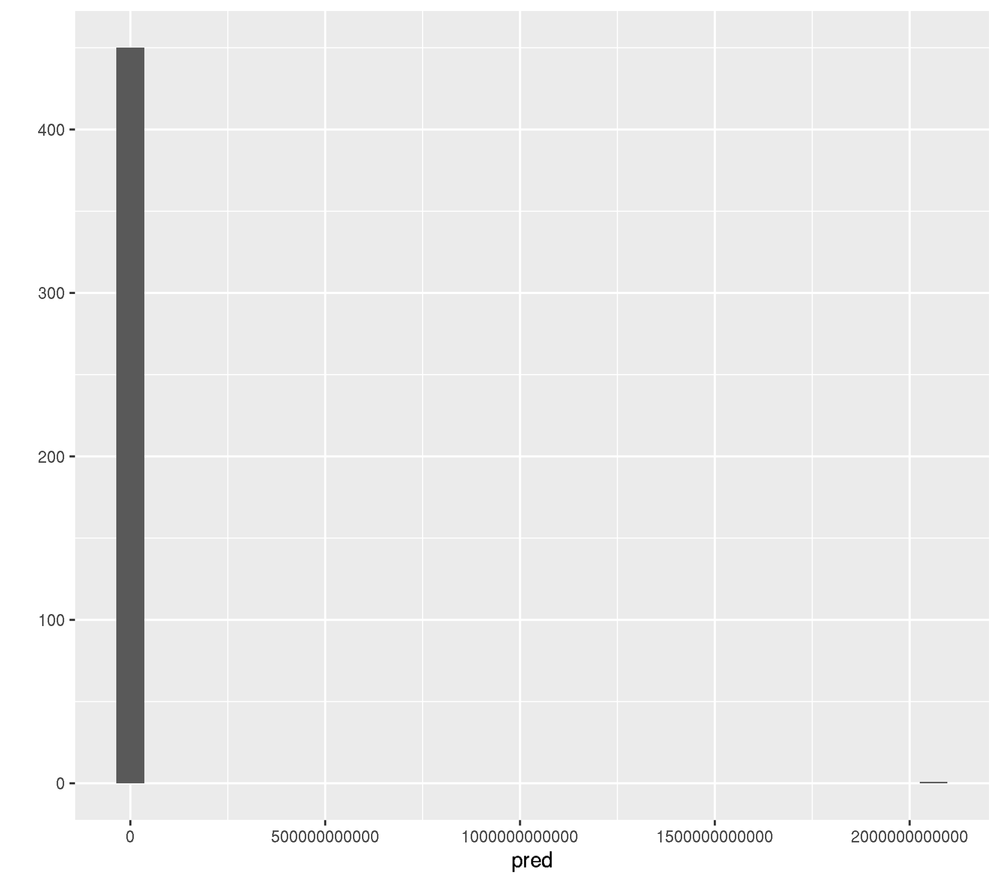
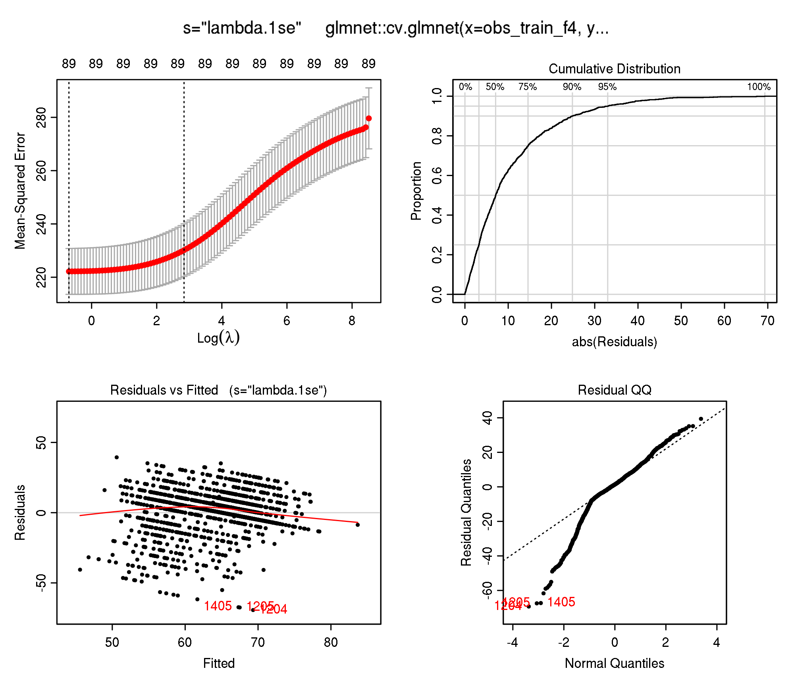
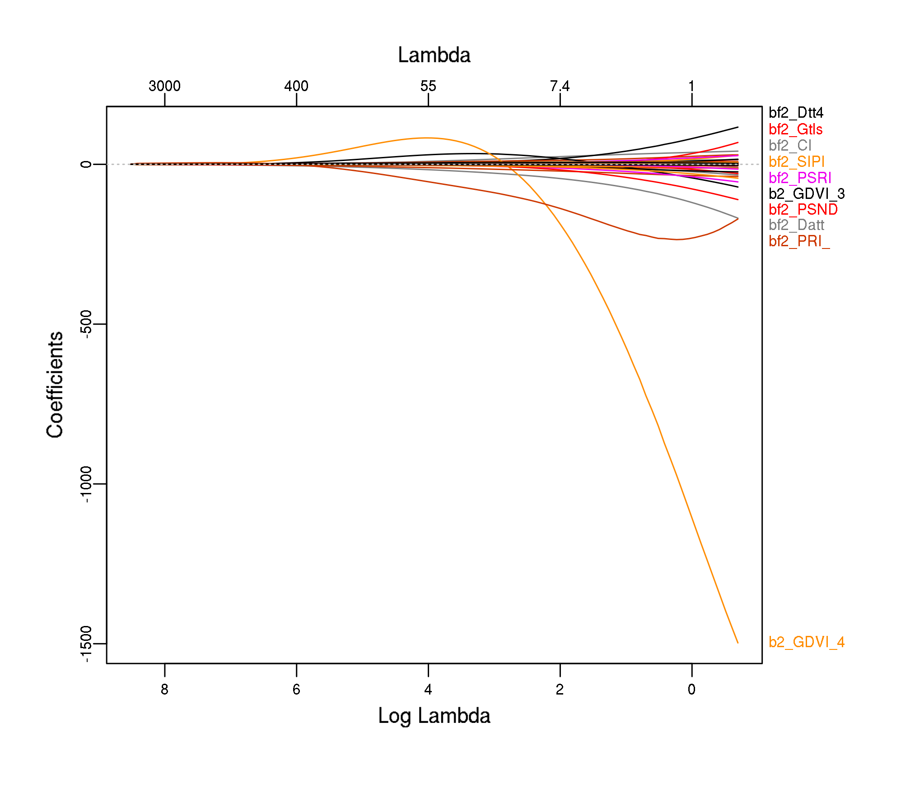
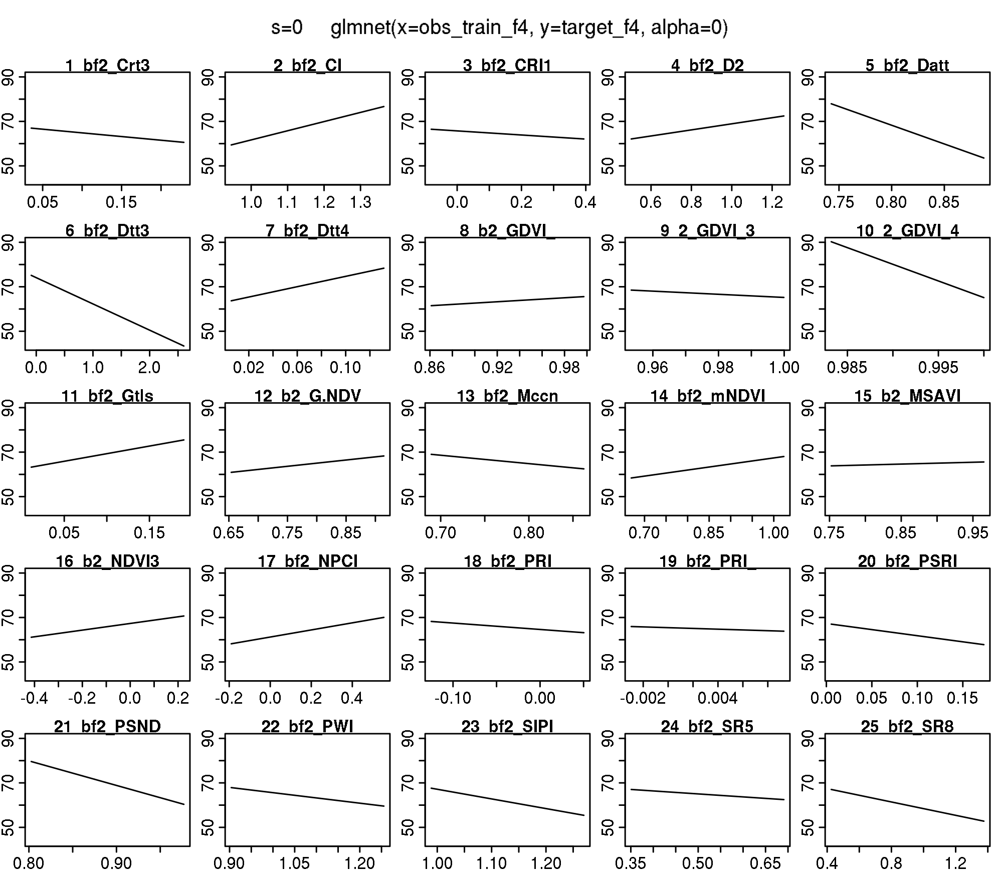
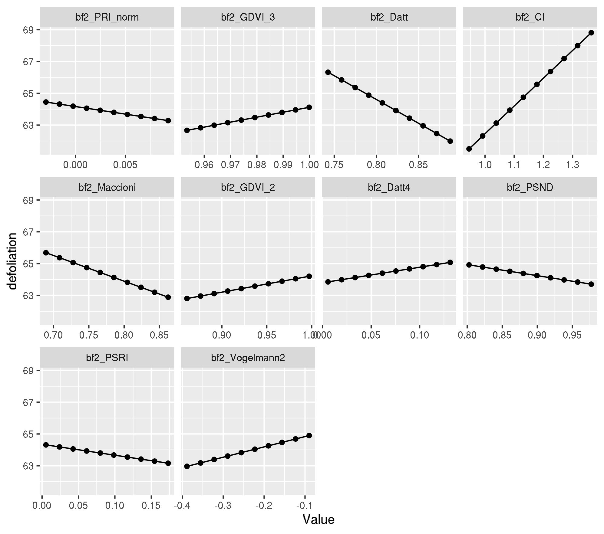
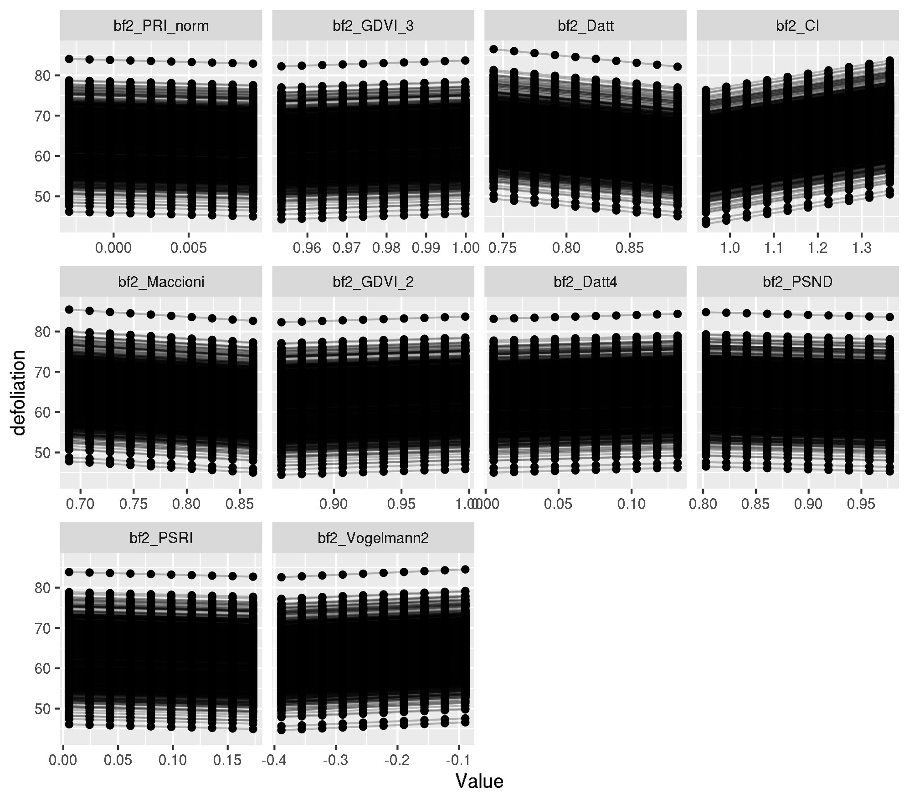

Last updated: 2020-03-11
Checks: 7 0
Knit directory: 2019-feature-selection/
This reproducible R Markdown analysis was created with workflowr (version 1.6.0). The Checks tab describes the reproducibility checks that were applied when the results were created. The Past versions tab lists the development history.
Great! Since the R Markdown file has been committed to the Git repository, you know the exact version of the code that produced these results.
Great job! The global environment was empty. Objects defined in the global environment can affect the analysis in your R Markdown file in unknown ways. For reproduciblity it’s best to always run the code in an empty environment.
The command set.seed(20190522) was run prior to running the code in the R Markdown file. Setting a seed ensures that any results that rely on randomness, e.g. subsampling or permutations, are reproducible.
Great job! Recording the operating system, R version, and package versions is critical for reproducibility.
Nice! There were no cached chunks for this analysis, so you can be confident that you successfully produced the results during this run.
Great job! Using relative paths to the files within your workflowr project makes it easier to run your code on other machines.
Great! You are using Git for version control. Tracking code development and connecting the code version to the results is critical for reproducibility. The version displayed above was the version of the Git repository at the time these results were generated.
Note that you need to be careful to ensure that all relevant files for the analysis have been committed to Git prior to generating the results (you can use wflow_publish or wflow_git_commit). workflowr only checks the R Markdown file, but you know if there are other scripts or data files that it depends on. Below is the status of the Git repository when the results were generated:
Ignored files:
Ignored: .Rhistory
Ignored: .Rproj.user/
Ignored: .Ruserdata/
Ignored: .drake/
Ignored: .vscode/
Ignored: analysis/rosm.cache/
Ignored: data/
Ignored: inst/Benchmark for Filter Methods for Feature Selection in High-Dimensional Classification Data.pdf
Ignored: inst/study-area-map/._study-area.qgs
Ignored: inst/study-area-map/study-area.qgs~
Ignored: log/
Ignored: renv/library/
Ignored: renv/staging/
Ignored: reviews/
Ignored: rosm.cache/
Untracked files:
Untracked: args-bm-laukiz2.rda
Untracked: code/06-modeling/project/
Unstaged changes:
Modified: .Rprofile
Modified: _drake.R
Modified: analysis/_site.yml
Modified: analysis/about.Rmd
Modified: analysis/report-defoliation.Rmd
Modified: code/02-hyperspectral-processing.R
Modified: code/03-sentinel-processing.R
Modified: code/06-modeling/paper/02-param-sets.R
Modified: code/06-modeling/paper/03-learner.R
Modified: code/06-modeling/paper/04-filter-wrapper.R
Modified: code/06-modeling/paper/07-tune-wrapper.R
Modified: code/06-modeling/paper/08-train.R
Modified: code/071-benchmark-matrix-buffer2.R
Modified: code/09-reports.R
Note that any generated files, e.g. HTML, png, CSS, etc., are not included in this status report because it is ok for generated content to have uncommitted changes.
These are the previous versions of the R Markdown and HTML files. If you’ve configured a remote Git repository (see ?wflow_git_remote), click on the hyperlinks in the table below to view them.
| File | Version | Author | Date | Message |
|---|---|---|---|---|
| Rmd | 960355a | pat-s | 2020-03-11 | workflowr::wflow_publish(“analysis/inspect-glmnet-models.Rmd”) |
| html | c77844b | pat-s | 2020-03-11 | Build site. |
| Rmd | 7f208c4 | pat-s | 2020-03-11 | workflowr::wflow_publish(“analysis/inspect-glmnet-models.Rmd”) |
| html | 7123ae1 | pat-s | 2020-03-11 | Build site. |
| Rmd | 0f90dcf | pat-s | 2020-03-11 | workflowr::wflow_publish(“analysis/inspect-glmnet-models.Rmd”) |
| html | 0ce0893 | pat-s | 2020-03-11 | Build site. |
| Rmd | ee19212 | pat-s | 2020-03-11 | workflowr::wflow_publish(“analysis/inspect-glmnet-models.Rmd”) |
| html | 89cd23f | pat-s | 2020-03-11 | Build site. |
| Rmd | b56050e | pat-s | 2020-03-11 | workflowr::wflow_publish(“analysis/inspect-glmnet-models.Rmd”) |
| html | 6f0317a | pat-s | 2020-03-11 | Build site. |
| Rmd | 37a838b | pat-s | 2020-03-11 | workflowr::wflow_publish(“analysis/inspect-glmnet-models.Rmd”) |
| html | 2926d7b | pat-s | 2020-03-08 | Build site. |
| Rmd | b7e12c1 | pat-s | 2020-03-08 | wflow_publish(knitr_in(“analysis/inspect-glmnet-models.Rmd”), view = |
Last update:
[1] “Wed Mar 11 19:43:24 2020”
cv.glmnet(). It iterates over lambda and chooses the most robust values for prediction via parameter s in predict.glmnet(). Supplying a custom lambda sequence does not make much sense since the internal heuristics are quite good (if one wants to use non-spatial optimization). See this stats.stackexchange question for how lambda defaults are estimated.glmnet() directly. This implementation does not do an internal optimization for lambda and hence s can/needs to be tuned directly by the user. Because it is hard to come up with good tuning ranges in this case, one can fit a cv.glmnet() on the data and use the borders of the estimated lambda as upper and lower borders of the tuning space.Inspect Ridge regression on VI task in detail because the error is enourmus.
First extract the models.
models <- benchmark_models_new_penalized_mbo_buffer2[[8]][["results"]][["vi_buffer2"]][["Ridge-MBO"]][["models"]]Then look at the fold performances
benchmark_models_new_penalized_mbo_buffer2[[8]][["results"]][["vi_buffer2"]][["Ridge-MBO"]][["measures.test"]][["rmse"]][1] 28.04421 21.44949 21.93398
[4] 199291640366.92307We see a high error on Fold 4 (= Laukiz 2). The others are also quite high but not “out of bounds”.
Let’s look at the full lambda sequence
purrr::map_int(models, ~ length(.x[["learner.model"]][["lambda"]]))[1] 5 100 100 100Interestingly, the lambda length of model 1 is not 100 (default) but only 5.
To inspect further, let’s refit a {glmnet} model directly on the training data of Fold 4 and inspect what glmnet::cv.glmnet estimates for the lambda sequence:
train_inds_fold4 <- benchmark_models_new_penalized_mbo_buffer2[[8]][["results"]][["vi_buffer2"]][["Ridge-MBO"]][["pred"]][["instance"]][["train.inds"]][[4]]
obs_train_f4 <- as.matrix(task_new_buffer2[[2]]$env$data[train_inds_fold4, getTaskFeatureNames(task_new_buffer2[[2]])])
target_f4 <- getTaskTargets(task_new_buffer2[[2]])[train_inds_fold4]Fit cv.glmnet
set.seed(1)
modf4 <- glmnet::cv.glmnet(obs_train_f4, target_f4, alpha = 0)
modf4$lambda.1se[1] 17.09715Predict on Laukiz 2 now.
pred_inds_fold4 <- benchmark_models_new_penalized_mbo_buffer2[[8]][["results"]][["vi_buffer2"]][["Ridge-MBO"]][["pred"]][["instance"]][["test.inds"]][[4]]
obs_pred_f4 <- as.matrix(task_new_buffer2[[2]]$env$data[pred_inds_fold4, getTaskFeatureNames(task_new_buffer2[[2]])])
pred <- predict(modf4, newx = obs_pred_f4, s = modf4$lambda.1se)Calculate the error
truth <- task_new_buffer2[[2]]$env$data[pred_inds_fold4, "defoliation"]
mlr:::measureRMSE(truth, pred)[1] 97073324139Ok, RMSE of 97073324139. This is most likely because of a few. observations which were predicted completely out of bounds.
qplot(pred, geom = "histogram")`stat_bin()` using `bins = 30`. Pick better value with `binwidth`.
| Version | Author | Date |
|---|---|---|
| c77844b | pat-s | 2020-03-11 |
pred[which(pred > 100), , drop = FALSE] 1
737 2061522943649Ok, its one observation (row id = 737).
Let’s have a look at the predictor values for this observation.
summary(obs_train_f4[737, ]) Min. 1st Qu. Median Mean 3rd Qu. Max.
-465.332 0.495 1.248 244.077 13.569 15673.108 Ok, how does this compare to summaries of other observations? NB: Obs. 500 - 510 were chosen randomly. The purpose here is to see if something within the predictors for specific observations looks abnormal.
lapply(seq(500:510), function(x) summary(obs_train_f4[x, ]))[[1]]
Min. 1st Qu. Median Mean 3rd Qu. Max.
-241.698 0.543 1.342 136.208 9.122 8310.363
[[2]]
Min. 1st Qu. Median Mean 3rd Qu. Max.
-162.222 0.557 1.092 88.503 7.497 5026.049
[[3]]
Min. 1st Qu. Median Mean 3rd Qu. Max.
-358.944 0.452 1.286 198.458 10.548 12438.312
[[4]]
Min. 1st Qu. Median Mean 3rd Qu. Max.
-88.5556 0.5348 1.0245 54.8659 7.3913 2870.3848
[[5]]
Min. 1st Qu. Median Mean 3rd Qu. Max.
-104.903 0.545 1.063 61.960 8.315 3202.895
[[6]]
Min. 1st Qu. Median Mean 3rd Qu. Max.
-311.475 0.527 1.277 172.420 9.705 10713.079
[[7]]
Min. 1st Qu. Median Mean 3rd Qu. Max.
-440.426 0.488 1.384 226.684 11.486 14710.321
[[8]]
Min. 1st Qu. Median Mean 3rd Qu. Max.
-135.505 0.601 1.104 76.380 8.666 4416.709
[[9]]
Min. 1st Qu. Median Mean 3rd Qu. Max.
-408.230 0.563 1.243 217.687 9.761 13471.893
[[10]]
Min. 1st Qu. Median Mean 3rd Qu. Max.
-228.969 0.570 1.067 81.748 8.795 4882.058
[[11]]
Min. 1st Qu. Median Mean 3rd Qu. Max.
-180.651 0.539 1.101 91.665 7.273 5362.145 We have some higher values for obs 737 but nothing which stands out.
Let’s look at the model coefficients and Partial Dependence Plots (PDP):
coef(modf4)90 x 1 sparse Matrix of class "dgCMatrix"
1
(Intercept) 531.11225516839
bf2_Boochs 0.01856478558
bf2_Boochs2 -0.10174641139
bf2_CARI -0.00101151781
bf2_Carter2 -0.54044992476
bf2_Carter3 -4.74060904178
bf2_Carter4 3.57395447927
bf2_Carter5 2.40033358279
bf2_Carter6 -0.01223220666
bf2_CI 17.44558789878
bf2_CI2 -0.09234363302
bf2_ClAInt -0.00029867499
bf2_CRI1 3.93199597949
bf2_CRI2 3.93621597231
bf2_CRI3 -0.14102965215
bf2_CRI4 0.07745521805
bf2_D1 -0.21172763780
bf2_D2 4.48364959574
bf2_Datt -29.92657011501
bf2_Datt2 -0.44902414236
bf2_Datt3 -5.82225051092
bf2_Datt4 9.73689861012
bf2_Datt5 0.43034087514
bf2_Datt6 0.52067426584
bf2_DD -0.00466742370
bf2_DDn 0.00165874779
bf2_DPI -2.94066199649
bf2_DWSI4 -0.27682042303
bf2_EGFR -0.01998100611
bf2_EVI -0.00201410021
bf2_GDVI_2 10.27846237651
bf2_GDVI_3 31.18505681072
bf2_GDVI_4 0.93958347942
bf2_GI -0.34477144062
bf2_Gitelson 2.64273830373
bf2_Gitelson2 -0.02585043394
bf2_GMI1 0.16818982267
bf2_GMI2 -0.05229428190
bf2_Green.NDVI 1.73562944987
bf2_Maccioni -16.16650612962
bf2_MCARI 0.00522029772
bf2_MCARI2 -0.00049064534
bf2_mND705 -0.64532841126
bf2_mNDVI 3.53489589242
bf2_MPRI -0.03442634938
bf2_MSAVI 3.65757418934
bf2_mSR 0.00161463593
bf2_mSR2 -0.08935382573
bf2_mSR705 -0.09691169765
bf2_MTCI -0.43694064196
bf2_MTVI -0.00121734402
bf2_NDVI 1.93976587113
bf2_NDVI2 -0.49852301101
bf2_NDVI3 0.71581375642
bf2_NPCI 0.53555171520
bf2_OSAVI 1.71019327640
bf2_PARS 0.05888230273
bf2_PRI -3.59215290150
bf2_PRI_norm -95.26848890029
bf2_PRI.CI2 -2.84067572332
bf2_PSRI -6.87122623622
bf2_PSSR 0.01087461932
bf2_PSND -6.96686024116
bf2_SPVI.1 -0.00146273294
bf2_PWI -2.54395514623
bf2_RDVI -0.03620253189
bf2_REP_Li -0.66792472297
bf2_SAVI 1.27179842863
bf2_SIPI -5.23226754782
bf2_SPVI.2 -0.00146824633
bf2_SR -0.01204737752
bf2_SR1 -0.05555531799
bf2_SR2 -0.01914132415
bf2_SR3 0.16764479685
bf2_SR4 0.99188378152
bf2_SR5 -5.57341447292
bf2_SR6 -0.22843650281
bf2_SR7 -0.09924316268
bf2_SR8 -1.27085004094
bf2_Sum_Dr1 -0.01285185223
bf2_Sum_Dr2 -0.00934767797
bf2_SRPI 0.01663453441
bf2_TCARI -0.00050333567
bf2_TCARI2 0.00193142448
bf2_TGI -0.00012288617
bf2_TVI -0.00002379354
bf2_Vogelmann -1.45492700073
bf2_Vogelmann2 6.48132112495
bf2_Vogelmann3 5.67673100608
bf2_Vogelmann4 4.98343236576Feature “bf2_PRI_norm” has a quite high value (-95).
plotres(modf4)
plot_glmnet(modf4$glmnet.fit)
plotmo(modf4$glmnet.fit) plotmo grid: bf2_Boochs bf2_Boochs2 bf2_CARI bf2_Carter2 bf2_Carter3
1.998693 2.845148 80.11412 0.1234949 0.08682775
bf2_Carter4 bf2_Carter5 bf2_Carter6 bf2_CI bf2_CI2 bf2_ClAInt
0.2861524 1.622418 19.10886 1.087452 5.280886 877.1538
bf2_CRI1 bf2_CRI2 bf2_CRI3 bf2_CRI4 bf2_D1 bf2_D2 bf2_Datt
0.04910712 0.06965439 -9.37543 -6.282868 1.514274 0.7339561 0.8177696
bf2_Datt2 bf2_Datt3 bf2_Datt4 bf2_Datt5 bf2_Datt6 bf2_DD bf2_DDn
4.216579 0.7465023 0.01912338 0.7204213 0.3120446 63.41494 -266.1666
bf2_DPI bf2_DWSI4 bf2_EGFR bf2_EVI bf2_GDVI_2 bf2_GDVI_3 bf2_GDVI_4
0.5886079 1.382126 7.359851 4.944853 0.9875098 0.9989018 0.9998978
bf2_GI bf2_Gitelson bf2_Gitelson2 bf2_GMI1 bf2_GMI2 bf2_Green.NDVI
1.43903 0.04093419 8.943006 8.631567 5.866379 0.80809
bf2_Maccioni bf2_MCARI bf2_MCARI2 bf2_mND705 bf2_mNDVI bf2_MPRI bf2_MSAVI
0.7883106 25.39617 397.1709 0.6687387 0.9220925 9.782586 0.9283319
bf2_mSR bf2_mSR2 bf2_mSR705 bf2_MTCI bf2_MTVI bf2_NDVI bf2_NDVI2
28.73996 3.88811 5.140166 3.635395 247.0532 0.8593618 0.6208416
bf2_NDVI3 bf2_NPCI bf2_OSAVI bf2_PARS bf2_PRI bf2_PRI_norm
-0.137058 0.2540456 1.005096 16.79849 -0.02239909 0.0009611926
bf2_PRI.CI2 bf2_PSRI bf2_PSSR bf2_PSND bf2_SPVI.1 bf2_PWI bf2_RDVI
-0.1033416 0.03712631 13.42027 0.9324896 238.338 1.013997 11.67572
bf2_REP_Li bf2_SAVI bf2_SIPI bf2_SPVI.2 bf2_SR bf2_SR1 bf2_SR2
724.5711 1.29702 1.042882 238.338 14.16137 5.866379 9.883037
bf2_SR3 bf2_SR4 bf2_SR5 bf2_SR6 bf2_SR7 bf2_SR8 bf2_Sum_Dr1
8.631567 2.146826 0.4827658 3.288378 0.3703371 0.5433803 38.28711
bf2_Sum_Dr2 bf2_SRPI bf2_TCARI bf2_TCARI2 bf2_TGI bf2_TVI
33.57344 0.6054507 31.51822 3.176928 922.7046 8765.983
bf2_Vogelmann bf2_Vogelmann2 bf2_Vogelmann3 bf2_Vogelmann4
1.84361 -0.2100082 1.316905 -0.2384276
Let’s figure out which are the ten most important features and create PDPs for these:
top_ten_abs <- coef(modf4) %>%
as.matrix() %>%
as.data.frame() %>%
dplyr::rename(coef = `1`) %>%
dplyr::mutate(feature = rownames(coef(modf4))) %>%
dplyr::slice(-1) %>%
dplyr::mutate(coef_abs = abs(coef)) %>%
dplyr::arrange(desc(coef_abs)) %>%
dplyr::slice(1:10) %>%
dplyr::pull(feature)
top_ten_abs [1] "bf2_PRI_norm" "bf2_GDVI_3" "bf2_Datt" "bf2_CI"
[5] "bf2_Maccioni" "bf2_GDVI_2" "bf2_Datt4" "bf2_PSND"
[9] "bf2_PSRI" "bf2_Vogelmann2"For PDP we use a model trained with {mlr} and check for equality first.
lrn <- makeLearner("regr.cvglmnet", alpha = 0)
task_f4 <- subsetTask(task_new_buffer2[[2]], train_inds_fold4)
set.seed(1)
mod_mlr <- train(lrn, task_f4)Check lambda sequence and lambda.1se:
mod_mlr$learner.model$lambda [1] 4983.9093118 4541.1525452 4137.7290693 3770.1446232 3435.2153661
[6] 3130.0403011 2851.9761478 2598.6144474 2367.7607022 2157.4153674
[11] 1965.7565324 1791.1241401 1632.0056082 1487.0227281 1354.9197274
[16] 1234.5523933 1124.8781613 1024.9470858 933.8936117 850.9290772
[21] 775.3348833 706.4562693 643.6966414 586.5124060 534.4082604
[26] 486.9329034 443.6751264 404.2602510 368.3468845 335.6239625
[31] 305.8080548 278.6409100 253.8872196 231.3325788 210.7816301
[36] 192.0563710 174.9946123 159.4485733 145.2836015 132.3770068
[41] 120.6169984 109.9017167 100.1383511 91.2423360 83.1366183
[46] 75.7509903 69.0214811 62.8898030 57.3028462 52.2122193
[51] 47.5738296 43.3475017 39.4966291 35.9878575 32.7907954
[56] 29.8777515 27.2234944 24.8050342 22.6014233 20.5935752
[61] 18.7640987 17.0971479 15.5782844 14.1943526 12.9333654
[66] 11.7844009 10.7375072 9.7836166 8.9144671 8.1225304
[71] 7.4009472 6.7434674 6.1443964 5.5985451 5.1011858
[76] 4.6480105 4.2350941 3.8588600 3.5160495 3.2036934
[81] 2.9190861 2.6597625 2.4234765 2.2081816 2.0120128
[86] 1.8332711 1.6704084 1.5220139 1.3868024 1.2636027
[91] 1.1513477 1.0490651 0.9558691 0.8709523 0.7935793
[96] 0.7230799 0.6588435 0.6003136 0.5469834 0.4983909mod_mlr$learner.model$lambda.1se[1] 17.09715Check for equality between {mlr} and {glmnet} directly
all.equal(modf4$lambda.1se, mod_mlr$learner.model$lambda.1se)[1] TRUEpdp <- generatePartialDependenceData(mod_mlr, task_f4, features = top_ten_abs)Loading required package: mmpfplotPartialDependence(pdp)
Individual PDP
pdp_ind <- generatePartialDependenceData(mod_mlr, task_f4,
features = top_ten_abs,
individual = TRUE
)
plotPartialDependence(pdp_ind)
Let’s look at the x values for observation 737:
obs_train_f4[737, top_ten_abs] bf2_PRI_norm bf2_GDVI_3 bf2_Datt bf2_CI bf2_Maccioni
0.0005331477 0.9997067366 0.8283409902 1.1411477583 0.8079021105
bf2_GDVI_2 bf2_Datt4 bf2_PSND bf2_PSRI bf2_Vogelmann2
0.9946317460 0.0085985645 0.9510653828 0.0191196652 -0.2698871749 Looks ok - they are all within a normal range with respectv to the PDP estimates.
sessionInfo()R version 3.6.1 (2019-07-05)
Platform: x86_64-pc-linux-gnu (64-bit)
Running under: CentOS Linux 7 (Core)
Matrix products: default
BLAS: /opt/spack/opt/spack/linux-centos7-x86_64/gcc-9.2.0/r-3.6.1-j25wr6zcofibs2zfjwg37357rjj26lqb/rlib/R/lib/libRblas.so
LAPACK: /opt/spack/opt/spack/linux-centos7-x86_64/gcc-9.2.0/r-3.6.1-j25wr6zcofibs2zfjwg37357rjj26lqb/rlib/R/lib/libRlapack.so
locale:
[1] LC_CTYPE=en_US.UTF-8 LC_NUMERIC=C
[3] LC_TIME=en_US.UTF-8 LC_COLLATE=en_US.UTF-8
[5] LC_MONETARY=en_US.UTF-8 LC_MESSAGES=en_US.UTF-8
[7] LC_PAPER=en_US.UTF-8 LC_NAME=C
[9] LC_ADDRESS=C LC_TELEPHONE=C
[11] LC_MEASUREMENT=en_US.UTF-8 LC_IDENTIFICATION=C
attached base packages:
[1] stats graphics grDevices utils datasets methods base
other attached packages:
[1] mmpf_0.0.5 tidyselect_0.2.5 plotmo_3.5.6
[4] TeachingDemos_2.10 plotrix_3.7-7 Formula_1.2-3
[7] magrittr_1.5 ggplot2_3.2.1 glmnet_3.0-2
[10] Matrix_1.2-15 mlr_2.17.0.9001 ParamHelpers_1.12
[13] drake_7.10.0
loaded via a namespace (and not attached):
[1] Rcpp_1.0.3 txtq_0.1.4 lattice_0.20-38
[4] assertthat_0.2.1 zeallot_0.1.0 rprojroot_1.3-2
[7] digest_0.6.23 foreach_1.4.4 R6_2.4.1
[10] backports_1.1.5 evaluate_0.13 pillar_1.4.3
[13] rlang_0.4.4 lazyeval_0.2.1 data.table_1.12.6
[16] whisker_0.3-2 R.utils_2.8.0 R.oo_1.23.0
[19] checkmate_1.9.1 rmarkdown_1.13 labeling_0.3
[22] splines_3.6.1 stringr_1.4.0 igraph_1.2.4.1
[25] munsell_0.5.0 compiler_3.6.1 httpuv_1.4.5.1
[28] xfun_0.5 pkgconfig_2.0.3 shape_1.4.4
[31] BBmisc_1.11 htmltools_0.3.6 tibble_2.1.3
[34] workflowr_1.6.0 codetools_0.2-16 XML_3.98-1.17
[37] fansi_0.4.1 crayon_1.3.4 dplyr_0.8.3
[40] withr_2.1.2 later_1.0.0 R.methodsS3_1.7.1
[43] grid_3.6.1 gtable_0.2.0 git2r_0.26.1
[46] storr_1.2.1 scales_1.0.0 stringi_1.3.1
[49] fs_1.3.1 promises_1.0.1 parallelMap_1.4
[52] filelock_1.0.2 vctrs_0.2.1 fastmatch_1.1-0
[55] iterators_1.0.10 tools_3.6.1 glue_1.3.1
[58] purrr_0.3.3 parallel_3.6.1 survival_2.43-3
[61] yaml_2.2.0 colorspace_1.4-0 base64url_1.4
[64] knitr_1.23